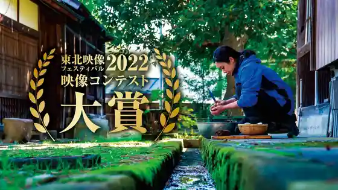
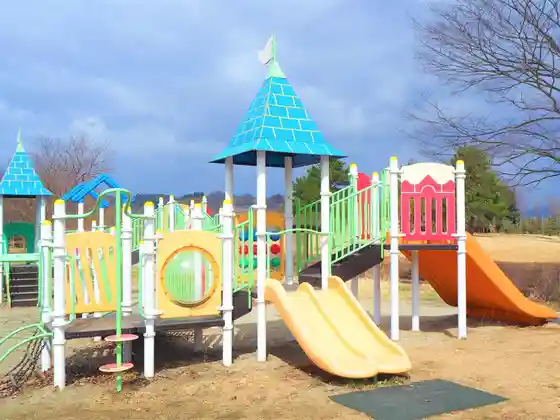
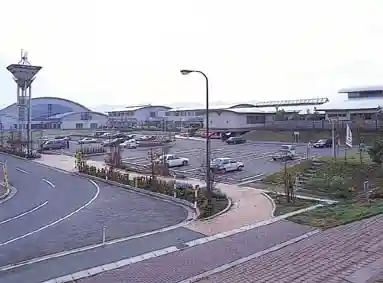
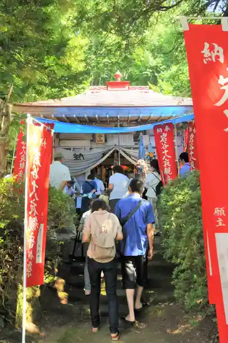

Imonikai Hassho no Chi Nakayama
Nakayama, Yamagata · 023-662-2114 · Official / source link

Nakayama Park
Nakayama, Yamagata · 023-662-5361 · Official / source link

Himawari Onsen Yu Ra Ra
Nakayama, Yamagata · 023-662-5780 · Official / source link

Iwatani Juhachi Yoru Kannon
Nakayama, Yamagata · 023-662-2175 · Official / source link

Juyo Bunkazai Kyu Kashiwagura Ie House (Kuzaemon)
Nakayama, Yamagata · 023-687-1778 · Official / source link
Mitsuhide In (Dainichi Nyorai Zazo)
Nakayama, Yamagata · 023-662-3181 · Official / source link
Tate no Dai Icho
Nakayama, Yamagata · 023-662-2175 · Official / source link
Kongo Yama Shoboji (Shingonshu) / Saijo Sanju San Kannon Dai 14 Ban Oka Village Kannon
Nakayama, Yamagata · Official / source link
Nabe Kakari Matsu
Nakayama, Yamagata · 023-662-2114 · Official / source link
Nakayama Ritsu Folk History Museum
Nakayama, Yamagata · 023-662-2175 · Official / source link
Saijo Kawa Nakayama Ryokuchi (Seseragi Park)
Nakayama, Yamagata · 023-662-2116 · Official / source link
En Doji
Nakayama, Yamagata · 023-662-2792 · Official / source link
Kyu Nagasaki Gakko no Genkan
Nakayama, Yamagata · 023-662-2175 · Official / source link
Daruma Tera
Nakayama, Yamagata · 023-662-3194 · Official / source link
Tate Inari Shrine
Nakayama, Yamagata · Official / source link
Nagasaki Tate Ato
Nakayama, Yamagata · 023-662-2235 · Official / source link
Takatori Yama
Nakayama, Yamagata · 023-662-2063 · Official / source link
Hieda Shrine
Nakayama, Yamagata · Official / source link
Mangan Tera
Nakayama, Yamagata · 023-662-2805 · Official / source link
Shoboji (Nakayama Nagasaki)
Nakayama, Yamagata · 023-662-2366 · Official / source link
Koshoji
Nakayama, Yamagata · Official / source link
Hakusan Shrine (Nakayama)
Nakayama, Yamagata · Official / source link
Rai En Tera
Nakayama, Yamagata · 023-662-2430 · Official / source link
Yanagisawa Tera
Nakayama, Yamagata · 023-662-2264 · Official / source link
Tama Masa Tera
Nakayama, Yamagata · 023-662-2715 · Official / source link
Masatsune In
Nakayama, Yamagata · 023-662-3230 · Official / source link
Ontake Shrine
Nakayama, Yamagata · Official / source link
Inari Shrine (Koshio)
Nakayama, Yamagata · Official / source link
O Daruma no Sakura Park
Nakayama, Yamagata · 023-662-2116 · Official / source link
Hachiman Shrine (Nakayama Oaza Oka)
Nakayama, Yamagata · Official / source link
Saijo Kawa Nakayama Ryokuchi (Undo Hiroba Nado)
Nakayama, Yamagata · 023-662-2116 · Official / source link
Yasaka Shrine (Nakayama)
Nakayama, Yamagata · Official / source link
Kumano Shrine (Nakayama)
Nakayama, Yamagata · Official / source link
Gassan Shrine (Dobashi)
Nakayama, Yamagata · Official / source link
Tensei Tera
Nakayama, Yamagata · 023-662-2472 · Official / source link
Yasu Go Tera
Nakayama, Yamagata · 023-662-2828 · Official / source link
Kyu Kashiwagura Soemon Ie House
Nakayama, Yamagata · 023-662-2175 · Official / source link
Gassan Shrine (Ko Nitta)
Nakayama, Yamagata · Official / source link
Nakayama Tami Tenisukoto
Nakayama, Yamagata · 023-662-2300 · Official / source link
Hachiman Shrine (Nakayama Daruma Tera)
Nakayama, Yamagata · Official / source link
Tsuchinoetatsu Senseki Hi
Nakayama, Yamagata · Official / source link